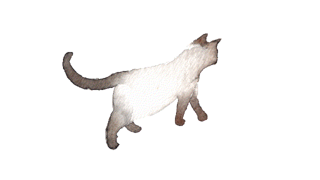

Mohamed Shaik

Hey there. I'm Mohamed, a computer science master's student at George Mason University. I do
research under Professor Bo Han on real-time
networking and immersive systems. In my free time, I read and occasionally take
photos of things that catch my eye.
Feel free to reach out at mohamedshaik272@gmail.com or
find me on
GitHub and
LinkedIn .
Education
GPA: 3.89/4.0 — Dean's List (7 consecutive semesters)
Graduated Magna Cum Laude with Outstanding Academic Achievement Award
Key Coursework: Artificial Intelligence, Computer Vision, Data Mining, Database Concepts,
Analysis of Algorithms, Computer Networks, Software Engineering, Operating Systems, Data
Structures, Formal Methods, Low-Level Programming
Concentration in Machine Learning
Technical Skills
Programming Languages:
Python
Java
C
C#
JavaScript
TypeScript
SQL
HTML/CSS
Libraries & Frameworks:
React
FastAPI
Flask
PyTorch
TensorFlow
NumPy
Pandas
OpenCV
scikit-learn
JUnit
Tools & Platforms:
Git
Docker
CI/CD
Linux/Unix
PostgreSQL
Azure
Arduino
© powered by monster energy drinks